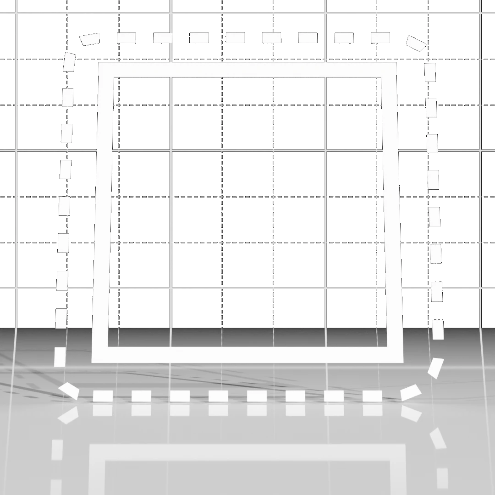
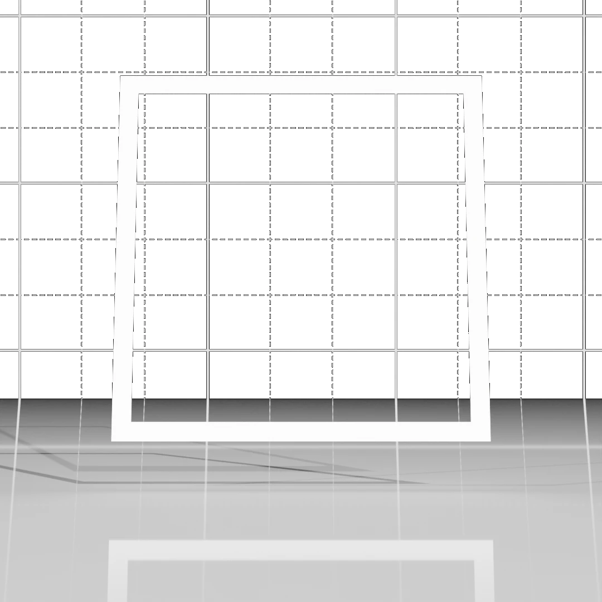

The first step towards non-planar printing
As the core of V-Slicing relies on voxels we need to find a method to convert our mesh into a useful format. I decided to start this process by importing the mesh using Assimp, which makes pretty much every 3D model format importable. To fix up the mesh a bit I use the option to merge nearby vertices, this makes sure that we don't get gaps between the triangles, which shouldn't happen often, but it did come up in testing due to rounding errors. However, this was the point where the simple no-brainer decisions ended.
Rounding errors, and robustness
A major consideration for me was how each method handles mesh errors. For example, missing walls, walls inside the mesh that shouldn't be there. This is because I've found that a lot of freely available models have atrocious topology. I'm not throwing shade towards the people who model them, as that isn't an easy process and they are posting the files for free, I have no right to complain, especially since errors like these are really easy to make on a high-resolution model in blender. This however means that we have to account for it and make the voxelization step as robust as possible.
I've tried 3 methods for voxelizing the mesh, each having its pros and cons. The first was the most obvious to me, making a grid along xy, placing vertical lines in every grid square, and then running the Möller–Trumbore algorithm to get all ray-triangle intersections along the line.
 Once we have these points we can utilize the fact that we know which side of the triangle we hit and start drawing if the triangle hit has a negative value in its normal for the z coordinate( the triangle faces down) and stop drawing voxels at the next point where the normal's z is positive(the triangle faces up). This is good for multiple reasons. First of all, we know when we are inside of the mesh and can fill the mesh completely. Second, we can theoretically handle walls inside the model... But as you can guess since this was the first method and I tried 2 others... this didn't really work.
Once we have these points we can utilize the fact that we know which side of the triangle we hit and start drawing if the triangle hit has a negative value in its normal for the z coordinate( the triangle faces down) and stop drawing voxels at the next point where the normal's z is positive(the triangle faces up). This is good for multiple reasons. First of all, we know when we are inside of the mesh and can fill the mesh completely. Second, we can theoretically handle walls inside the model... But as you can guess since this was the first method and I tried 2 others... this didn't really work.
This method should probably work better, but I most likely messed something up on top of some basic logical issues. When I implemented this method I noticed that the whole inside/outside distinction didn't work well and I think I know why. The reason was the next major issue, missing triangles when checking from voxels. Who'd have thought, that if you try to check a whole grid cell with a single line you will end up missing triangles that don't hit the line but are inside the voxel... This led to points that didn't get closed at the right height, for example, the benchy doors were somewhat filled in. Or the stand I added and the areas around the flag holder had holes in the infill. I implemented a "voting" system or cellular automata if a cell had at least x neighbors of the opposing type out of the 3 types which are shell, infill, and air then it would swap to that type. This mostly worked but the whole process took too long, as you have to run it multiple times for it to work best. The intersection calculation could be optimized to be faster to some extent by a quadtree, so we only checked relevant triangles for a line, but the holes remained and sometimes ruined the slicing process. We need something more robust and reliable.
 I figured that if the issue was small gaps, I would just add an extra padding with a DF. A distance field is a function that tells you how far away from something you are, they are commonly used in computer graphics. So I implemented a triangle DF function and it worked mostly, but the amount of padding needed from the triangle to close the gaps was so large that the object looked puffy, which was an interesting effect(may add that later as an artistic effect), but it wasn't good for dimensionally accurate parts. The more interesting part of this process was the corrosion system I added to fill the mesh. Step one was adding the shell, this didn't help determine the inside of the mesh, but it did give us a mold to fill. We then fill the whole bounding box of the object with infill marked voxels, then we add all the infills that touch air(or have voxels that are outside the grid) to a queue. After this, we run a breadth-first search to corrode away all parts that touch air. We don't corrode voxels that have at least 3-4 shell voxels attached, which helps fill in random 1 voxel holes. This method doesn't care about extra walls inside the mesh but does mean a puffy mesh.
Incomes rasterization, which is usually a way of turning triangles into pixels, which are the 2d equivalent of voxels. It's a fast process with relatively simple algorithms. The new method keeps the corrosion step but replaces the df-based shell generation removing the puffy effect. On top of being more accurate, it is also faster, as we only traverse active voxels of the triangle. With the DF algorithm, we checked every voxel of the triangle's bounding box, which meant that we would check a lot of voxels that weren't actually part of the triangle.
 Voxelizing a triangle this way is fast and simple. We first convert the triangle's vertices into voxel coordinate space. Then we can draw a perfect voxel line along all 3 edges with Bresanham's line algorithm. We add the edge voxels to a list which we then group by z and order by xy. We then draw a line between all points of the groups. Usually most groups have just two voxels but grouping and drawing lines between all voxels that come after each other makes it more robust. This produces a mostly correct triangle, but since we grouped by z we will have gaps when looking from certain angles. To remedy this we run this two more times grouping by x and then by y in those runs. We then add all the voxels to the voxel mesh, and the separate passes cover the gaps for their respective axis, giving us a perfectly voxelized triangle.
The corrosion and the new shell voxelization together give us a properly voxelized mesh. This method also retains dimensional accuracy. There is one problem, the code was written to work, not work fast. It collects each triangle's voxels into a collection(mostly has maps to speed up checking for specific voxels). Which then gets merged with the other triangles' voxels. From this, we remove duplicates and then add them to another hashset that represents the voxel mesh. These steps take quite a long time. On top of this the heavy use of LINQ results in large amounts of memory and processing power wasted. I used the .AsParallel() which allows for some level of automagical loop parallelism. However this usually only pushes my CPU to 50%. Furthermore, the corrosion step is a basic breadth-first search, which is single core. All these inefficiencies result in voxelization taking minutes at a resolution of 0.4mm for the floating benchy.
Time for some optimization
What I've described up to this point was the proof of concept slicer's voxelization stage. For the rewrite performance like that is just plain unacceptable. So I got to work. The first fundamental change was creating an abstraction for voxel meshes. I created an interface called IVoxelCollection. The purpose of this abstraction will be to allow for using different internal data structures to be less locked into something like I got in the first version with hashmaps.
The interface has a Contains(pos) and WithinBounds(pos), where Contains calls WithinBounds and also checks if the given voxel is active, this makes the actual code easier to read. The key is that every class that inherits from IVoxelCollection must implement the [] set get functions(like you would use an array), this means that due to polymorphism I can use an IVoxelCollection variable in the logic where the actual collection gets passed in from outside. Like this, I can change the type of collection used to anything as long as I wrap it in a custom class that inherits IVoxelCollection and the logic won't break. This came in handy while developing, as I wanted to see which would be faster. A 1D array or a 3D array. I wanted to see the differences, turns out they are almost the same with 1D arrays just barely beating out 3D arrays winning by about 1s in voxelization(8sec vs 9sec) and the same in layer generation(15s instead of 16s) even with the ids having to be calculated the 1D arrays seems to come out on top while also using a 100mb less ram(2.7 GB vs 2.8 GB). As you can see the performance for voxelization will be improved significantly from 6-8 minutes to 8-9 seconds. This doesn't mean that we get a 60x performance improvement, as the old slice times were for 0.4mm resolution the new tests are run at the target resolution for this rewrite of 0.1mm which means that 64 times the voxels were processed leading to an improvement of more than 3500 times in voxelization.
How did I achieve that level of performance? With multiple steps over two days of staring at a blank console until a time pops up when it's done, and also exporting the STL to check in cura, which surprisingly proved to be the most convenient STL viewer that I currently have installed, as blender takes too many steps to import a model.
The first step was removing needless complexity by switching to the proper data structure for something like this. This was for most of the testing C#'s built-in 3D array. There are downsides like the immense memory usage. 2.7 GB for a benchy is too much, but for now, it is usable and that's what matters and I can swap it out later to something better thanks to the interface. I will most likely use something like an oct-tree with the nodes being arrays where each voxel is at most a single byte. I'm not sure how much of a performance impact replacing the hashset was since a HashSet-based IVoxelCollection wouldn't work properly with the highly parallel nature of the new code. So that means at least a 16x performance increase from multithreading by replacing that.
After this, I removed the increased complexity that came from trying to use 16 threads with a hashmap. This included not collecting active voxels from every triangle into a single temporary collection. The rewrite passes in a reference to the voxel collection to each triangle which then can just set any voxel they want to be a shell value. Since we just care about which voxels are shells and which aren't, we don't need synchronization as we don't care which triangle sets the value to 1. This removes 2 unions of lists per triangle. By this time the voxelization was starting to get performant compared to the old version as a 0.1mm benchy took around 1-2 minutes to voxelize, which was about a 256x improvement when accounting for the 4x higher resolution. It was getting close to being usable. After this, I took the liberty to reorder some logic to remove unnecessary calculations. I didn't spend much time benchmarking here, so I don't remember the times.
The last phase was improving the longest step, the corrosion which still takes 9x as much as shell creation and filling the mesh with infill values combined. The old system used breadth-first search and a queue, not very multi-thread friendly. I tried to use that but with some thread-safe collections which did help but it was taking too long and too many threads were idle. With the thread-safe collections, I got it to around 21-27 seconds based on which collection type I used and how many voxels each thread took when its own queue ran out. Adding this smaller queue made it so each thread had its own stash and so could work longer without having to stand in line for the next batch shortening the line as the threads would run out at different times. At this point, the only reason I kept going was that I knew how long iterating through each voxel took and I knew that it was not long at all. And since both operations are O(N) I knew that there had to be a better option. I realized something when I looked at it at this point. Each voxel's type was effectively a flag that meant that it could still be added since if it was corroded away it wasn't an infill type anymore. I used this to remove synchronizing threads completely. Now I just let threads corrode anything and the worst-case scenario is that some threads almost completely overlap, but this wouldn't usually last long just based on pure luck. This improved it a few seconds but not much. After this, I used a heuristic approach to improve it. I created a few seed points about as many as the number of physical threads. In reality about 3x of the number of hardware threads seems to be a sweet spot. I also switched to depth-first search, this may at first seem like it wouldn't change much, but it results in the threads mainly going down and then spreading out, which means less overlap between threads, and the number of seed points meant that if a thread stopped it had other places to pick up at, while not creating too much overhead by switching too many times.
With all of these optimizations, I ended up with the blazing fast voxelization step of 8-9 seconds with everything included at a higher resolution which will be key to improving the shell's accuracy. Improving slice times this much shoved me that even slice times may be competitive with current slicers if a little more hardware-intense. I plan on keeping slice times below a minute for roughly benchy-sized objects. Which I'm on track for, I already have the code for layer generation. Layers are a bit trickier as seemingly it isn't a multi-threaded problem, since the next layer always requires the previous layer's shape with this approach, but with some clever tricks, I managed to utilize 100% of my CPU and generate an average benchy layer in about 50ms which results in a 15s layer generation for the 266 nonplanar layers that make up a floating benchy. Join me next time to learn how I went insane trying to shave minutes off the layer generation too. If you want to get notified about new devlogs or ask me about the slicer you can join the GeekWorks discord server.